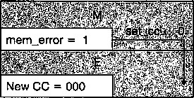
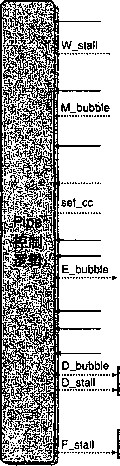
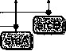
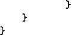
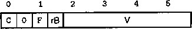
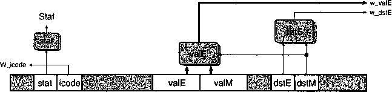
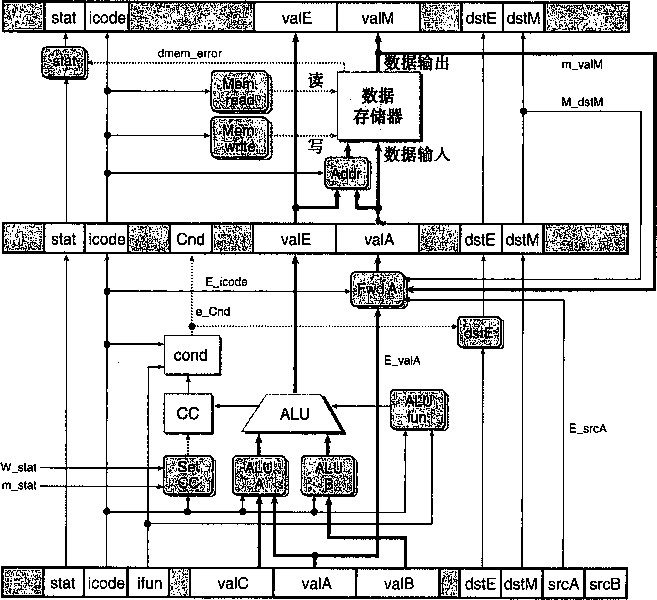

图4-62表明如何处理这些指令。同前面一样，指令按照它们进入流线的顺序列出，而不 是按照它们出现在程序中的顺序。因为预测跳转指令会选择分支，所以周期3会取出位于跳转目 标处的指令，而周期4会取出该指令后的那条指令。在周期4,分支逻辑发现不应该选择分支之 前，已经取出了两条指令，它们不应该继续执行下去了。幸运的是，这两条指令都没有导致程序 员可见的状态发生改变。只有指令到达执行阶段时才会发生那种情况，在执行阶段中，指令会改 变条件码。我们只要在下一个周期往译码和执行阶段中插入气泡，并同时取出跳转指令后面的指 令，这样就 能取消 （有时也称为指 令排除 （instruction squashing))那两条预测错误的指令。这 样一来，两条预测错误的指令就会从流水线中消失。正如4.5.11节中讨论的那样，在流水线控制 逻辑中加入对基本的时钟寄存器设 计所做 的简单扩展，就能使我们向流水线寄存器中插人气泡。
prog8
5 6
10
0x000: xorl %eax,%eax |
D |
M! |
w ' |
|||||||
0x002: jne target 林 Not taken |
M |
W |
||||||||
OxOOe: irmovl $2,%edx # Target |
||||||||||
bubble |
U |
E |
M |
w |
||||||
0x014: irmovl $3, %ebx # Target -f-1 |
F |
|||||||||
bubble |
u |
D |
E |
M |
w |
|||||
0x007: irmovl $l，％eax # Fail through |
E |
W |
||||||||
OxOOd: halt |
E.' |
M |
W |
|||||||
图4-62处理预测错误的分支指令。流水线预测会选择分支，所以开始取跳转目标处的指令。在周期4 发现预测错误之前,已经取出了两条指令，此时，跳转指令正在通过执行阶段。在周期5,流 水线往译码和执行阶段中插入气泡，取消了两条目标指令，同时还取出跳转后面的那条指令
对于导致异常的指令，我们必须使流水线化的实现符合期望的ISA行为，也就是在前面所 有的指令结束前，后面的指令不能影响程序的状态。会使达到这些效果比较麻烦的因素有：1) 在程序执行的两个不同阶段（取指和访存）会发现异常，2)在三个不同阶段（执行、访存和写
回）会更新程序状态。
在我们的阶段设计中，每个流水线寄存器中会包含一个状态码stat,随着每条指令经过流 水线阶段，它会记录指令的状态。当异常发生时，我们将这个信息作为指令状态的一部分记录下 来，并且继续取指、译码和执行指令，就好像什么都没有出错似的。当异常指令到达访存阶段 时，我们会釆取措施防止后面的指令修改程序员可见的状态：1)禁止执行阶段中的指令设置条 件码，2)向存储器阶段中插入气泡，以禁止向数据存储器中写人，3)当写回阶段中有异常指令 时，暂停写回阶段，因而暂停了流水线。
图4-63中的流水线图说明了我们的流水线控制如何处理导致异常的指令后面跟着一条会改 变条件码的指令的情况。在周期6, pushl指令到达访存阶段，产生一个存储器错误。在同一个 周期，执行阶段中的addl指令产生新的条件码的值。当访存或者写回阶段中有异常指令时（通 过检查信号m_stat和W_stat,然后将信号set 一 cc设置为0),禁止设置条件码。在图4-63 的例子中，我石还可以看^既向访存阶段插入了气也在写回阶段暂停了异常指令~pushl 指令在写回阶段保持暂停，后面的指令都没有通过执行阶段。
# proglO 1 2 3 4 5 6 7 8 9 10
0x000: irmovl $1,%eax |
F |
D |
E |
M |
W |
||||
0x006: xorl %esp,%esp #CC = 100 |
F |
D |
E |
M |
W |
||||
0x008: pushl %eax |
F |
D |
E |
M |
W |
W |
W |
||
0x00a: addl %eax,%eax |
F |
D |
E |
||||||
OxOOc: irmovl $2,%eax |
F |
D |
E |
||||||
周期 6

图4-63处理存储器引用非法异常。在周期6, pushl指令的存储器引用非法导致禁止更新条件码。
流水线开始往访存阶段插入气泡，并在写回阶段暂停异常指令
对状态信号流水线化，控制条件码的设置，以及控制流水线阶段——将这些结合起来，我们 实现了异常的期望的行为：异常指令之前的指令都完成了，而后面的指令对程序员可见的状态都 没有影响。
2.发现特殊控制条件
图4-64总结了需要特殊流水线控制的条件。它给出的HCL表达式描述了在哪些条件下会出 现这三种特殊情况。一些简单的组合逻辑块实现了这些表达式，为了在时钟上升开始下一个周 期时控制流水线寄存器的活动，这些块必须在时钟周期结束之前产生结果。在一个时钟周期内， 流水线寄存器D、E和M分别保持着处于译码、执行和访存阶段中的指令的状态。在到达时钟 周期末尾时，信号d_srcA和d_srcB会被设置为译码阶段中指令的源操作数的寄存器ID。当 ret指令通过流水线时，要想发现它，只要检查译码、执行和访存阶段中指令的指令码。发现 加载/使用冒险要检查执行阶段中的指令类型（mrmovl或popl),并把它的目的寄存器与译码 阶段中指令的源寄存器相比较。当跳转指令在执行阶段时，流水线控制逻辑应该能发现预测错误 的分支，这样当指令进入访存阶段时，它就能设置从错误预测中恢复所需要的条件。当跳转指令 处于执行阶段时，信号e一Cnd指明是否要选择分支。通过检查访存和写回阶段中的指令状态值, 就能发现异常指令。对于访存阶段，我们使用在这个阶段中计算出来的信号而不是使 用流水线寄存器的M一stat。这个内部信号包含着可能的数据存储器地址错误。
条件 |
触发条件 |
处理r6t 加载/使用冒险 预测错误的分支 异常 |
IREt e {DJcode, EJcode, MJcode}. EJcode € {IMRMOVL, IPOPL} && E.dstM e {d_srcA, d_srcB} EJcode = IJXX && ! e_Cnd m_stat 6 {SADR, SINS, SHLT} 11 W-Stat e {SADR, SINS, SHLT} |
图4-64流氷线控制逻辑的检查条件。四种不同的条件要求改变流水线，暂停流水线或奢取消已 经部分执行的指令
» . 1 . -
流水线控制机制
图4-65是一些低级机制，它们使得流水线控制逻辑能将指令阻塞在流水线寄存器中，或是 往流水线中插入一个气泡。这些机制包括对4.2.5节描述的基本时钟寄存器的小扩展。假设每个 流水线寄存器有两个控制输入：暂停（stall)和气泡（bubble)。这些信号的涵：置决定了当时钟 上升时该如何更新流水线寄存器。在正常操作下（图4-65a)，这两个输入都设为0,使得寄存器 加载它的输入作为新的状态。当暂停信号设为1时（图4-65b),禁止更新状态。相反，寄存器 会保持它以前的状态。这使得它可以将指令阻塞在某个流水线阶段中。当气泡信号设置为1时 (图4-65c),寄存器状态会设置成某个固定的复位配置（reset configuration),得到一个与nop指
状态
状态 :
m
输入 =y
输人 =y
输出 =x
时钟上升沿
暂停 ff 气泡 =0 =0
⑷正常
状态 =y
输入 =y
神’ .
状态 =x
输入 =y
输出 =
轉’
时钟上升沿
气泡
暂
b )暂停
状态 =x
状态 =nop , 一 - 输出 =nop
输人 =y
时钟上升沿
暂停
=0
幻气泡
图4_65附加的流水线寄存器操作。a)正常条件，当时钟上升时，寄存器的状态和输出被设置成输 入的值;b)当运行在暂停模式时，状态保持先前的值不变；c)当运行在气泡模式时，会用 nqp操作的状裔覆盖当前状态
令等效的状态。一个流水线寄存器复位配置的0、1模式由流水线寄存器中字段的集合决定。例 如,要往流水线寄存器D中插入一个气泡，我们要将icode字段设置为常数值IN0P(图4-26)。 要住流水线寄存器E中插入一个气泡，我们要将icode字段设为工N0P，并將dstE、dstM, srcA和srcB字段设为常数RN0NE。确定复位配置是硬件设计师在设计流水线寄存器时的任务 之一。在此我们不讨论细节。我们会将气泡和暂停信号都设为1看成是出错。.
图4-66中的表给出了各个流水线寄存器在三种特殊情况下应该釆取的行动。对每神情况的 处理都是流水线寄存器正常、暂停和气泡操作的某个组合。
条件 |
流水线寄存器 |
||||
F |
D |
E |
M |
W |
|
处理ret |
暂停 |
气泡 |
正常 |
正常 |
正常 |
加载/使用冒险 |
暂停 |
暂停 |
气泡 |
正常 |
正常 |
预测错误的分支 |
正常 |
正常 |
气泡 |
正常 |
- 正常 |
图4-66流水线控制逻辑的动作。木同的条件需要改变流水线流，或者会暂停流水线，或者会取消部
分已执行的指令
在时序方面，流水线寄存器的暂停和气泡控制信号由组合逻辑块产生。当时钟上升时,这些 值必须是合法的，使得当下一个时钟周期开始时，每个流水线寄存器要么加载，要么暂停，要么 产生气泡。有了这个对流水线寄存器设计的小扩展，我们就能用组合逻辑、时钟寄存器和随机访 问存储器这样的基本构建块，来实现一个完整的、包括所有控制的流水线。
4.控制条件的组合
…到目前为止，在我们对特殊流水线控制条件的i寸论中，假设在任意一个时钟周期内，最多只 能出现一个特殊情况。在设计系统时，一个常见的缺陷是不能处理同时出现多个特殊情况的情 形。现在来分析这些可能性。我们不需要担心多个程序异常的组合情况，因为已经很小心地设计 了异常处理机制，它能够考虑流水线中其他指令的情况。图4-67是导致其他三种特殊控制条件 的流水线状态。图中所示的是译码、执行和访存阶段的块。暗色的方柩代表要出现这种条件必须 满足的特别限制。加载/使用冒险要求执行阶段中的指令将一个值从存储器读到寄存器中，同时彳 译码阶段中的指令要以该寄存器作为源操作数。预测错读的分支要求执行阶段中的指令是一个跳 转指令。对ret来说有三种可能的情况~■指令可以处在译码、执行或访存阶段。当ret指令 通过流水线时，前面的流水线阶段都是气泡。
|
加载/使用 |
预测错误 |
ret 1 |
ret 2 |
ret 3 |
|||||
|
M |
M |
M |
M |
M |
ret, |
||||
|
E |
,捕 |
E |
t 风 A |
E |
’ |
E |
* |
E |
k 气泡 ‘ |
|
D |
卿： |
D |
D |
D |
D |
. 气泡 . |
|||
t - , t 组合A 个 丁
1 组合B
• " 1 ' 厂■ ' •. ■ . ' ' ■ .
图4-67特殊控制条件的流水线状态。,图中标朋的两对情况可能同时出现
从图中我们可以看出，大多数控制条件是互斥的。例如，不可能同时既有加载丨使用冒险又 有预测错误的分支,因为加载/使用管险荽求执行阶段申*加_指令(mrmovr或popl),而预 测错谟的分支要求执行阶段中晕一条跳转指令。类似地,，第二个和第三个ret组合也不可能与 加载/使用冒险或预测错误的分董向时出现。只有用箭头标明的两种组合可能同时出现。
组合A指执行阶段中有一条不选择分支的跳转指令，而译码阶段中有一条ret指令。出现 这种组合要求ret位于不选择分支的目标处。流水线控制逻辑应该发现分支预测错误，因此要
取消ret指令。
_练习题4.35写一个Y86汇编语言程序，它能导致出现组合A的情况，并判断控制逻辑是否处理正确。
合并组合A条件的控制动作（见图4-66),得到以下面流水线控制动作（假设气泡或暂停会 覆盖正常的情况）：
条件 |
流水线寄存器 |
||||
F |
D |
E |
M |
W |
|
处理ret |
暂停 |
气泡 |
正常 |
正常 |
正常 |
预测错误的分支 |
正常 |
气泡 |
气泡 |
正常 |
正常 |
组合 |
暂停 |
气泡 |
气泡 |
正常 |
正常 |
也就是说，组合A的处理与预测错误的分支相似，只不过在取指阶段是暂停。幸运的是, 在下一个周期，PC选择逻辑会选择跳转后面那条指令的地址，而不是预测的程序计数器值，所 以流水线寄存器F发生了什么是没有关系的。因此我们得出结论，流水线能正确处理这种组合
情况。
组合B包括一个加载/使用冒险，其中加载指令设置寄存器％es P ,然后ret指令用这个寄 存器作为源操作数，因为它必须从栈中弹出返回地址。流水线控制逻辑应该将ret指令阻塞在 译码阶段 。
®练习题4.36写一个Y86汇编语言程序，它能导致出现组合B的情况，如果流水线运行正确，以 halt指令结束。
合并组合B条件的控制动作（见图4-66),得到以下流水线控制动作：
条件 |
流水线寄存器 |
||||
F . |
D |
E |
M |
W |
|
处理ret |
暂停 |
气泡 |
正常 |
正常 |
正常 |
预测错误的分支 |
暂停 |
.暂停 |
气泡 |
正常 |
正常 |
组合 |
暂停 |
气泡+暂停 |
气泡 |
正常 |
正常 |
期望的情况 |
暂停 |
会停 |
气泡 |
正常 |
正常 |
如果同时触发两组动作，控制逻辑会试图暂停ret指令来避免加载/使用冒险，同时 又会因为ret指令而往译码阶段中插入一个气泡。显然，我们不希望流水线同时执行这两 组动作。而是希望它只釆取针对加载/使用冒险的动作。处理ret指令的动作应该推迟一 个周期。
这些分析表明组合B需要特殊处理。实际上 ， PIPE控制逻辑原来的实现并没有正确处理这 种组合情况。即使设计已经通过了许多模拟测试，它还是有细节问题，只有通过刚才那样的分析 才能发现。当执行一个含有组合B的程序时，控制逻辑会将流水线寄存器D的气泡和暂停信号 都置为1。这个例子表明了系统分析的重要性。只运行正常的程序是很难发现这个问题的。如果 没有发现这个问题，流水线就不能忠实地实现ISA的行为。
控制逻辑实现
图4-68是流水线控制逻辑的整体结构。.根据来自流水线寄存器和流水线阶段的信号，控制 逻辑产生流水线寄存器的暂停和气泡控制信号,同时决定是否要更新条件码寄存器。我们可以将 图4-64的发现条件和图4-66的动作结合起来,产生各个流水线控制信号的HCL描述。

W_stat
MJcode
m_stat
e_Cnd
d_srcB
d_srcA
dstM
valM
Mcnd|«l
dstM
valA

valP
rA
rB
icode
E 一 dstM
EJcode
|
1 |
|||||||||||
|
stat |
icode |
ifun |
PI |
valC |
valA |
valB |
dstE |
dstM |
srcA |
srcB |
|
D_icode
icode
valC
CC
1
icode
图4-68 PIPE流水线控制逻辑。这个逻辑覆盖了通过流水线的正常指令流，以处理特殊条件，例如过 程返回、预测错误的分支、加载/使用冒险和程序异常
遇到加载/使用冒险或ret指令，流水线寄存器F必须暂停：
bool F_stall =
Conditions for a load/use hazard E^icode in { IMRMOVL, IPOPL } &&
E_dstM in { d^srcA, d_srcB } I I
Stalling at fetch while ret passes through pipeline IRET in { D_icode, E__icode, icode >;
IB练习题4.37写出PIPE实现中信号D_stall的HCL代码。
遇到预测错误的分支或ret指令，流水线寄存器D必须设置为气泡。然而，正如前面一节 的分析，当遇到加载/使用冒险和ret指令组合时，不应该插入气泡 ：
bool D_bubble =
Mispredicted branch
(E一icode == IJXX && !e_Cnd) I I
Stalling at fetch while ret passes through pipeline
but not condition for a load/use hazard !(E_icode in { IMRMOVL, IPOPL }
&& E^dstM in { d_srcA, d_srcB »
&& IRET in { D_icode, E_icode, M_icode >;
_练习题4.38写出PIPE实现中信号E_bubble的HCL代码。
_练习题4.39写出PIPE实现中信号 S et_ CC 的HCL代码。该信号只对0P1指令出现，应该考虑程 序异常的影响。
B练习题4.40写出PIPE实现中信号M__bubble*W_st a ll的HCL代码。后者需要修改图4-64中 列出的异常条件。
.现在我们就讲完了所有的特殊流水线控制信号的值。在PIPE的完整HCL代码中，所有其 他的流水线控制信号都设为0。
测试设计
正如我们看到的,即使是一个;f艮简单的微处埋器，其设计中还是有很多方式会引入缺陷。使 用流水线时，处于不同流水线阶段的栺令之间有许多不易察觉的交互。我们看到一些设计上的挑 战来自于不常见的指令,(例如弹出值到栈指针)，或承不常见的指令组合（例如不选择分支的跳 转指令后面跟一条ret指令）。还看到异常处理增加了一类全新的可能的流水线行为。那么怎样 确定我们的设计是正确的呢？对于硬件制造者来说，这是主要关心的问题，因为他们不能简单地 报告一个错误，让用户通过Internet下载代码补丁。即使是简单的逻辑设计错误都可能有很严重 的后果，特别是随着微处理器越来越多地用于我们生命和健康至关重要的系统，例如汽车防抱死 制动系统、心脏起搏器，以及航空控制系统。
简单地糢拟设计运行一些“典型的”程序，不足以用来测试一个系统。相反，全面的测试 需要设计一些方法，系统地产生许多测试尽可能多地使用不同指令和指令组合。在创建Y86处 理器的过程中，我们还设计了很多测试脚本，每个脚本都产生出很多不同的测试，运行处理器模 拟，并且比较得$的寄存声和存储器值和我们YIS指令集模拟器产生的值。以下是这些脚本的 简要介绍：
optest ：运行 49 个不同的Y86指令测试，具有不同的源和目的寄畚器 9
jtest ：运行.64个不同的跳转和函数调用指令的测试,具有不同的是否选择分支的组合。
cmtest ：运行28个不同的条件传送指令的测试，具有不同的控制组合。
htest ：运行600个不同的数据冒险可能性的测试，具有不同舄源和目的指令的组合，在这 些指令对之间有不同数量的nop指令。
ctest ：测试22个不同的控制组合，基于类似4.5.11节中我们做的那样的分析。
'etest ：测试12种不同的导致异常的指令和跟在后面可能改变程序员可见状态的指令组合。
这种测试方法的关键思想是我们想要尽量的系统化，生成的测贫会创建出不同的可能导致流 水线错误的条件。 . .
形式化地验证我们的设计
即使一个设计通过了广泛的i测试，我们也不能保证对于所有可能的程序，.它都能正确运行。 即使只、考虑由短的代码政組成的螂试，可以测试的十能的程夺的数量也大得难以想象。.不过，形 式化验证（formal verification)这种新方法能够樣证有工具能够产格地考虑一个系统所有可能的 行为，并确定是否有设计错误。
我们能够应用形式化验证Y86处理器较早的一个版本[13]。建立一个框架，比较流水线化 的设计PIPE和非流水线化的版本SEQ。也就是，它能够证明对于任意Y86程序，两个处理器对 程序员可见的状态有完全一样的影响。当然，我们的验证器不可能真的运行所有可能的程序，因 为这样程序的数量是无穷大的。相反，它使用了归纳法来证明,表明两个处理器之间在一个周 期到一个周期的基础上都是一致的。进行这种分析要求用符号方法（symbolic methods)来推导 硬件，在使用符号方法时，我们认为所有的程序值都是任意的整数，将ALU抽象成某种/‘黑盒 子”，根据它的参数计算某个未指定的函数。我们只假设SEQ和PIPE的ALU计算相同的函数。
用控制逻辑的HCL耦述来产生符号处理器模型的控制逻斡，因此我们能发现HCL代码中的々 问题。能够证明SEQ和PIPE是完全相同的,也不能保证它们忠实地实拜了 Y86指令集体系~ 构。不过，它能够发现任何由于不正确的流水线设计导致的错误，这是设i十错误的主要来源 。'
在实验中，我们不仅验证了在本章中考虑的PIPE版本，还验证了作为家庭作业的几个变 种，其中，我们增加了更多的指令，修改了硬件的能力，或是使用了不同的分支预测策略。有趣 的是，在所有的设计中，只发现了一个错误，涉及家庭作业4.57中描迷的变种的答案.中的控制
组合B (在4.5.11节中讲述的）。这暴露出测试体制中的一个弱点，导致我们在ctest测试脚本中 增加了附加的情况。 、 ' . > v
形式化验证仍然处于发展的早期阶段。它的X具往往很难使用,而且还不能验证大规模的设 计。我们能够验证Y86处理器部分原因就是因为它们相对比较简单。;即使如此，也需要几周的 时间和精力，多次运行那些工其,每次最多需要8个小时的计算机时间。这是一个活跃的研究领 域，有些工具成为可用的商业版本，有些在Intel、AMD和IBM这样的公司使用 。'
网络旁注ARCH :VLOG:流水线化的Y86处理器的Verilog实现
正如我们提到过的,现代的逻辑设计包括用硬件播述语言书写硬件设计的文本表示。然后， 可以通过模拟和各种形式化验证工具来测试设计。一旦对设计有了信心，我们就可以使用逻辑合 成（logic synthesis)工具将设计翻译成实际的逻辑电路。
我们用Verilog硬件描述语言开发了 Y86处叙器设计的模型彳这些设计将实现处理器基本构 造块的模块和直接从HCL描述产生出来的控制逻辑结合了冬来。我们能够合成这些设计的一些， 将逻辑电路描述下载到字段可编程的门降列（FPGA)硬件可以在这些处理器上运行实际的 Y86程序。
4.5.12性能分析
我们可以看到，所有需要流水线控制逻辑进行特辦处理的条件，都会导致流水线不能够实现 每个时钟周期发射一条新指令的目标。我们可以通过确定往流水线中插入气泡的频率，来衡暈这 种效率的损失，因为插入气泡会引发未使用的流水线周期。一条返回指令会产生三个气泡，一个 加载/使用冒险会产生一个，而一个预测错误的分支会产生两个。我们可以通过计箅PIPE执行 一条指令所需要的平均时钟周期数的估计值，来量化这些处罚对整体性能的影响，这种衡量方法 称为CPI (Cycles Per Instruction,每指令周期数)。这种衡量值是流水线平均吞吐量的倒数，不 过时间单位是时钟周期，而不是微微秒。这是一个设计体系结构效率的很有用的衡量标准 。> 如果我们忽略异常带来的性能损失（异常的定义表明它是很少出现的)，另一种思考CPI的 方法是，假设我们在处理器上运行某个基准程序，并观察执行阶段的运行。每个周期，执行阶段 要么会处理一条指令，然后这条指令继续通过剩下的阶段，直到完成；要么会处理一个由于三种 特殊情况之一而插入的气泡。如果这个阶段一共处理了 Q条指令和个气泡,那么处理器总共 需要大约q+a个时钟周期来执行(^条指令。我们说“大约”晕因为忽略了启动指令通过流水
线的周期。于是，可以用如下方法来计算这个基准程序的CPI:
.• • • • ... — • . : -
CPI =
C/
+ Cb
= 1.0
Q Q
- .. .- • • . ,. ■ • • • • • ■ * •. . ♦
. . ,:. . .. . : . . .‘ . * ; . ■ 1 -. .
也就是i CPI等于1.0加上一个处罚项 CJCp 这个项表明执行一条指令平均要插入多少个气泡。.
因为只有三种指令类型会导致插入气泡,我们可以将这个处罚项分解难三个部分：
ck = 1.0 + //7 + m/? + rp •
这里,.(load penalty,加载处罚),是由于加载/使用*险填成暂鐵_*插入气泡的平均数 ，mp (mispredicted branch penalty,预测错误分支处罚）是由于预测错误取消指令时插入气泡的平均 数，而少(return penalty,返回处罚）是由于ret指令造成暂停时插人气泡的乎均数。每种处罚 鄱是由该种原因引释的插入气泡的总数（A的一部分)除以执行指令的总数(C,)。
为了估计每种处罚，:我们需要知道相关指令（加载、条件转移和返回)的出现频率,以及对 每种指令特殊情况出现的频率。对CPI的计算，我们使用下面这组频率（等同于[47]和[49]中
报告的测量值）： •
•加载指令（mrmovl和popl)占所有执行指令的25%。其中20%会导致^]载/使用冒险。 •条件分支指令占所有执行指令的20%。其中60%会选择分支，而40%不选择分支。
•返回指令占所有执行指令的2%。
因此，我们可以估计每种处罚，它是指令类型频率、条件出现频率，以及当条件出现时插入 气泡数的乘积：
原因 |
名称 |
指令频率 |
条件频率 |
气泡 |
乘积 |
加载/使用 |
Ip |
0.25 |
0.20 |
1 |
0.05 |
预测错误 |
mp |
0.20 |
0.40 |
2 |
0.16 |
返回 |
rp |
0.02 |
1.00 |
3 |
0.06 |
总处罚 |
0.27 |
三种处罚的总和是0.27,所以得到CPI为1.27。
我们的目标是设计一 个每个 周期发射一条指令的流水线，也就是CPI为1.0。虽然没有完全 达到目标，但是整体性能已经很不错了。我们还能看到，要想进一步降低CPI,就应该集中注意 力预测错误的分支。它们占整个处罚0.27中的0.16,因为条件转移非常普遍，我们的预测策略 又经常出错，而每次预测错误都要取消两条指令。
练习题 4.41假设我们使用了一种成功率可以达到65%的分支预测策略，例如后向分支选择、前向
分支就不选择 ， 见4.5.4节。那么对CPI有什么样的影响，假设其他所有频率都不变。
@ 练习题 4.42让我们来分析你为练习题4.4和4.5写的程序中使用条件数据传送和条件控制转移的相
对性能。假设用这些程序计算一个非常长的数组的绝对值的和，所以整体性能主要由内循环所需要的
周斯数决定。假设跳转指令预测为选择分支，而大约50%的数组值为正。
平均来说，这两个程序的内循环中执行了多少条指令？
平均来说，这两个程序的内循环中插入了多少个气泡？
对这两个程序来说，每个数组元素平均需要多少个时钟周期？
4.5.13未完成的工作
我们已经创建了 PIPE流水线化的微处理器结构，设计了控制逻辑块，并实现了处理普通流 水线流不足以处理的特殊情况的流水线控制逻辑。然而，PIPE还是缺乏一些实际微处理器设计 中所必需的关键特性。我们会强调其中一些，并讨论要增加这些特性需要些什么。
1.多周期指令
Y86指令集中的所有指令都包括一些简单的操作，例如数字加法。这些操作可以在执行阶段 中一个周期内处理完。在一个更完整的指令集中，我们还将实现一些需要更为复杂操作的指令, 例如，整数乘法和除法，以及浮点运算。在一个像PIPE这样性能中等的处理器中，这些操作的 典型执行时间从浮点加法的3或4个周期到整数除法的32个周期。为了实现这些指令，我们既 需要额外的硬件来执行这些计算，还需要一种机制来协调这些指令的处理与流水线其他部分之间 的关系。
实现多周期指令的一种简单方法就是简单地扩展执行阶段逻辑的功能，添加一些整数和浮点 算术运算单元。一条指令在执行阶段中逗留它所需要的多个时钟周期，会导致取指和译码阶段暂 停。这种方法实现起来很简单，但是得到的性能并不是太好。
通过釆用独立于主流水线的特殊硬件功能单元来处理较为复杂的操作，可以得到更好的 性能。通常，有一个功能单元来执行整数乘法和除法，还有一个来执行浮点操作。当一条指令 进入译码阶段时，它可以 被发射 到特殊单元。在这个特殊单元执行该操作时，流水线会继续处理 其他指令。通常，浮点单元本身也是流水线化的，因此多条指令可以在主流水线和各个单元中并 发执行。
不同单元的操作必须同步，以避免出错。比如说，如果在不同单元执行的各个指令之间有数 据相关，控制逻辑可能需要暂停系统的某个部分，直到由系统其他某个部分处理的操作的结果完 成。经常使用各种艰式的转发，将结果从系统的一个部分传递到其他部分，这和前面PIPE各个 阶段之间的转发一#。虽然与PIPE相比，整个设计变得更复杂，但还是可以使用暂停、转发, 以及流水线控制等样的技术，使整体行为与顺序的ISA模型相匹配。
2.与存储系统的接口
在PIPE的描述中，我们假设取指单元和数据存储器都可以在一个时钟周期内读或是写存储 器中任意的位置。我们还忽略了由自我修改代码造成的可能冒险，在自我修改代码中，一条指令 对一个存储区域进行写，而后面又从这个区域中读取指令。进一步说，是以存储器位置的虚拟地 址来引用它们的，这要求在执行实际的读或写操作之前，要将虚拟地址翻译成物理地址。显然， 要在一个时钟周期内完成所有这些处理是不现实的。更糟糕的是，要访问的存储器的值可能位于 磁盘上，这会需要上百万个时钟周期才能把数据读入到处理器存储器中。
正如将在第6章和第9章中讲述的那样，处理器的存储系统是由多种硬件存储器和管理虚拟 存储器的操作系统软件共同组成的。存储系统被组织成一个层次结构，较快但是较小的存储器保 持着存储器的一个子集，而较慢但是较大的存储器作为它的后备。最靠近处理器的一层是 高速缓 存（cache)存储器，它提供对最常使用的存储器位置的快速访问。一个典型的处理器有两个第 一层高速缓存一一^个用于读指令，一个用于读和写数据。另一种类型的高速缓存存储器，称为 翻译后备缓冲器 （Translation Look-aside Buffer)或TLB,它提供了从虚拟地址到物理地址的快 速翻译。将TLB和高速缓存结合起来使用，在大多数时候 ， 确实可能在一个时钟周期内读指令 并读或是写数据。因此，我们的处理器对访问存储器的简化看法实际上是很合理的。
虽然高速缓存中保存最常引用的存储器位置，但是有时候还会出现高速缓存 不命中 （miss), 也就是有些引用的位置不在高速缓存中。在最好的情况下，可以从较高层的高速缓存或处理器的 主存中找到不命中的数据，这需要3〜20个时钟周期。同时，流水线会简单地暂停 ， 将指令保 持在取指或访存阶段 ， 直到高速缓存能够执行读或写操作。至于流水线设计，通过添加更多的暂 停条件到流水线控制逻辑，就能实现这个功能。高速缓存不命中以及随之而来的与流水线的同步 都完全是由硬件来处理的，这样能使所需的时间尽可能地缩短到很少数量的时钟周期。
在有些情况，被引用的存储器位置实际上是存储在磁盘存储器上的。此时，硬件会产生一个 缺页（page fault)异常信号。同其他异常一样，这个异常会导致处理器调用操作系统的异常处理 程序代码。然后这段代码会发起一个从磁盘到主存的传送操作。一旦完成，操作系统会返回到原 来的程序，而导致缺页的指令会被重新执行。这次，存储器引用将成功，虽然可能会导致高速缓 存不命中。让硬件调用操作系统例程,然后操作系统例程又会将控制返回给硬件，这就使得硬件 和系统软件在处理缺页时能协同工作。因为访问磁盘需要数百万个时钟周期，OS缺页中断处理 程序执行的处理所需的几百个时钟周期对性能的影响可以忽略不计。
从处理器的角度来看，将用暂停来处理短时间的高速缓存不命中和用异常处理来处理长时间 的缺页结合起来，能够顾及到存储器访问时由于存储器层次结构引起的所有不可预测性。
当前的微处理器设计
一个五阶段流水线，例如已经讲过的 PIPE 处理器 ， 代表了 20 世纪 80 年代中期的处理器设 计水平 。 Berkeley 的 Patterson 研究组开发的 RISC 处理器原型是第一个 SPARC 处理器的基础 ， 它是Sun Microsystems在1987年开发的。Stanford的Hennessy研究组开发的处理器由MIPS Technologies (一个由Hennessy成立的公司)在1986,年商业化了。这两种处理器都使用的是五 阶段流水线。Intel的i486处理器用的也是五阶段流水线，只不过阶段之间的职责划分不太一样， 它有两个译码阶段和一个合并的执行/访存阶段[33]。
这些流水线化设计的呑吐量都限制在最多一个时钟周期一条指令。4.5.12小节中描述的CPI (Cycles Per Instruction,每指令周期)测量值不可能小于1.0。不同的阶段一次只能处理一条指 令。较新的处理器支持超标量（superscalar)操作，意味着它们逋过并行地取指、译码和执行多 条指令，可以实现小于1.0的CPI。当超标量处理器已经广泛使用时，性能测量标准已经从CPI 转化成了它的倒数——每周期执行指令的平均数，即IPC。对超标量处理器来说,IPC可以大于 1.0。最先进的设计使用了 一种称为乱序（out-of-order)执行的技术来并行地执行多条指令，执 行的顺序也可能完全不同于它们在程序中出现的顺序，但是保暫了顺序ISA模型蕴含的整体行 为。作为对程序优化讨论的一部分,我们将会在第5章讨论这种形式的执行。
不过，流水线化的处理器并不只有传统的用途。现在出售的大部分处理器都用在嵌入式系统 中，控制着汽车运行、消费产品，以及其他一些系统用户不能直接看到处理器的设备。在这些应 用中，与性能较高的模型相比,，流水线化的处理器的简单性，会降低成本和功耗需求。
最近，随着多核处理器受到追捧，有些人声称通过在一个芯片上集成许多简单的处理器，比
使用少量更复杂的处理器能获得更多的整体计算能力。这种策略有时被称为“多核”处理器[10]。
— - • ' ... , , ■ ^ ■ ■ ' -
4.6 小结
我们已经看到，指令集体系结构，即ISA,在处理器行为(就指令集合及其编码而言）和如 何实现处理器之间提供了一层抽象。ISA提供了程序执行的一种顺序说明,也就是一条穡令执行 完了，下一条指令才会开始。
从IA32指令开始，大大简化数据类型、地址模式和指令编码，我们定义了 Y86指令集。得 到的ISA既有RISC指令集的属性,也有CISC指令集的属性 d 然后 ，将不同指令组织放到五个 阶段中处理，在此,根据被执行指令的不同，每个阶段中的操作也不相同。据此，我们构造了 SEQ处理器，其中每个时钟周期执行一条指令，它会通迓所有五个阶段。
流水线化通过让不同的阶段并行操作，改进了系统的吞吐量性能。在任意_个给定的时刻， 多•条指夺被不同的阶段处理。在引入这秭并行性的过程中，我们必须非常小心，以提供与程方 的顺序执行相同的程序级行为a通过重新调整SEQ各个部分的顺序，引入流水线，我们得到 SEQ+,接着添加流水线寄存器，创建出PIPE-流水线 6 然后，添加了转发逻辑，加速了将结果 从一条指令发送到另一条指令，从而提高了流水线的性能。有几种特殊情况需要额外的流水线控 制逻辑来暂停或取消一些流水线阶段。
我们的设计中包括一些基本的异常处理机制,在此，保证只有到异常指令之前的指令会影响 程序员可见的状态。实现完整的异常处理远比此更具挑战性。在釆用了更深流水线和更多并行性 的系统中，要想正确处理异常就更加爱杂了。
在本章中，我们学习了有关处理器设计的几个重要经验‘：
••管理复杂性是首要问题。想要优化梗用硬件资源，在最小命成本下获得最大的性能。为了 实现这个目的，我们创建了一个非常简单而一致的框架,来处理所有不同的指令类型。有 了这个框架，就能够在处理不同指令类型的逻辑中共享硬件单元 。，:
•我们不需要直接实现ISA。ISA的直接实现意味着一个顺序的设计。为了获得更高的性齔 我扪想运用硬件熊力以同时执行许多操作，这就导致要使用威水线化设计，通过仔细设计 和分析，我们能够处理各种流水线冒险，因此运行一个程序的整体效果，同用ISA模型获
得的效果完全一致。
•硬件设计人 M 必须非常谨慎小心。 r旦芯片制造出来，就几乎不可能改正任何错误了 。一 开始就使设计正确是非常重要的。这就意味着要仔细地分析各种指令类型和组合，甚至那 些看上去没有意义的情况,例如弹出值到栈指针。必须用系统的模拟测试程序彻底地测试 设计。 在开发PIPE的控制逻辑中，我们的设计有个细微的错误，只有通过对控制组合的 仔细而系统的分析才能发现。
网络旁注ARCH:HCL: Y86处理器的HCL描述
本章已经介绍几个简单的逻辑设计，以及 Y86 处理器 SEQ 和 PIPE 的控制逻辑的部分 HCL. 代码。我们提供了 HCL 语言的文档和这两个处理器控制逻辑的完整 HCL 描述。这些描述每个都 只需要 5 〜 7 页 HCL 代码，完整地研究它们是 >( 艮值得的。
Y86模拟器
本章的实验资料包括SEQ和PIPE处理器的模拟器。每个模拟器都有两个版本：
•GUI (图形用户界面）版本在图形窗口中显示存储器、程序代码以及处理器状态。它提供 了一种方式简便地查看指令如何通过处理舞。控制面板还允许你交互式地重启动、单步或 运行模拟器。
•文本版本运行的是相同的模拟器，但是它显示信息的唯一方式是打印到终端。对调试来 讲，这个版本不是很有用，但是它允许处理器的自动测试。
这些模拟器的控制逻辑是通过将逻辑块的HCL声明翻译成C代码产生的。然后，编译这些 代码并与模拟代码的其他部分进行链接。这样的结合使得你可以用这些模拟器测试原始设计的各 种变种。提供的测试脚本，全面地测试各种指令以及各种冒脸的可能性。
参考文献说明
对于那些有兴趣更多地学习逻辑设计的人来说，Katz的逻辑设计教科书[56]是标准的入门 教材，它强调了硬件描述语言的使用。
Hennessy和Patterson的计算机体系结构教科书[49]覆盖了处理器设计的广泛内容，包括这 里讲述的简单流水线，还有并行执行更多指令的更髙级的处理器。Shriver和Smith[97]详细介绍 了 AMD制造的与Intel兼容的IA32处理器。
家庭作业
*4.43在3.4.2节中，IA32 pushl.指令被描述成要减少栈指针，然后将寄存器存储在栈指针的位置。因此, 如果我们有一条指令形如对于某个寄存器—，pushl它等价于下面的代码序列：
subl $4,%esp movl REG, (%esp)
Decrement stack pointer Store REG on stack
A•借助于练习题4.6中所做的分析，这段代码序列正确地描述了指令pushl% es p的行为吗？请解释。 B.你该如何改写这段代码序列，使得它能够像对REG是其他寄存器时一样，正确地描述REG 是％© 3? 的情况？ ' ^
*4.44 3.4.2节中，IA32popl指令被描述为将来自栈顶的.结果复制到目的寄存器然后将栈指针减少。因 此，如果我们有一条指令形如pbpl7^(7,它等价于下面的代码序列 ： |
movl (%esp ),REG addl $4,%esp
Read REG from stack Increment stack pointer '
借助于练习题4.7中所做的分析，这段代码序列正确地描述了指令popl%esp的行为吗？请解释。
你该如何改写这段代码序列，使得它能够像对是其他寄存器时一样，正确地描述REG 是％63 ? 的情况？
4.45你的作业是写一个执行冒泡排序的Y86程序。.下面这个C函数用数组引用实现冒泡排序，供你参 考：
/* Bubble sort: Array version 氺 / void bubble_a(int *data, int count) { int i, next;
for (next = 1; next < count; next++) { for (i = next-1; i >= 0; i--) if (data[i+l] < data[i]) {
/伞 Swap adjacent elements */ int t = data[i+l]; data[i+l] = data[i]; data [i] = t;

书写并测试一个C版本，它用指针引用数组元素，而不是用数组索引。
书写并测试一个由这个函数和测试代码组成的Y86程序。你会发现模仿编译你的C代码产生的 IA32代码来做实现会很有帮助。虽然指针比较通常是用无符号算术运算来实现的，但是在这个练 习中，你可以使用有符号算术运箅。
* 4.46修改对家庭作业4.45所写的代码，用条件传送来实现冒泡排序函数的内循环中的测试和交换。
*4.47如3.7.2小节中讲述的那样，IA32的指令leave可以用来使栈为返回做准备。它等价于下面这个 Y86代码序列 ••
rrmovl %ebp, %esp Set stack pointer to beginning of frame
popl %ebp Restore saved %ebp and set stacic ptr to end of craJJer's
假设我们要往Y86指令集中加入一条指令，编码如下：
字节 0 12 3 4 5
leave D 0
请描述实现这一指令所执行的计算。可以参考popl的计算（图4-20)。

*4.48在Y86示例程序中，例如图4-6中的Sum函数，我们多次遇到想将一个常数加到寄存器的情况（例 如第12和13行，以及第14和15行)。这要求首先用irmovl指令将一个寄存器设置为这个常数, 然后用addl指令把这个值加到目的寄存器。假设想添加一条新指令iaddl,其格式如下 ：
字节
iaddl V，rB
这条指令将常数值 V 加到寄存器rB。请描述实现这一指令所执行的计算。可以参考 irmovl 和 OP1的计算（图4-18)。
*4.49文件 seq-full.hcl 还将常数工 LEAVE 声明为十六进制值D,也就是 leave 的指令代码，同时将
常数 REBP 声明为7,即％的？的寄存器ID。修改实现 leave 指令的控制逻辑块的HCL描述，就 像家庭作业4.47中描述的那样。可以参考实验资料获得如何为你的解答生成模拟器以及如何测试模 拟器的指导。
**4.50文件 seq-full.hcl 包含SEQ的HCL描述，并将常数工工 ADDL 声明为十六进制值C,也就是
iaddl的指令代码。修改实现iaddl指令的控制逻辑块的HCL描述，就像家庭作业4.48中描述的那 样。可以参考实验资料获得如何为你的解答生成模拟器以及如何测试模拟器的指导。 1 : : I/ 1 : | n
4.51假设要创建一个较低成本的、基于我们为PIPE-设计的结构（图4-41)的流水线化的处理器，不使 用旁路技术。这个设计用暂停来处理所有的数据相关，直到产生所需值的指令已经通过了写回阶段。
文件pipe - stall.hcl包含一个对PIPE的HCL代码的修改版，其中禁止了旁路逻辑。也就是信 号e 一 valA和e_valB只是简单地声明如下：
## DO NOT MODIFY THE FOLLOWING CODE.
## No forwarding. valA is either valP or value from register file int d.valA =[
D_icode in { ICALL, IJXX > : D_valP; # Use incremented PC
: d_rvalA; # Use value read from register file
]；
## No forwarding. valB is value from register file int d_valB = d.rvalB;
修改文件结尾处的流水线控制逻辑，使之能正确处理所有可能的控制和数据冒险。作为设计工作的 一部分，你应该分析各种控制情况的组合，就像我们在PIPE的流水线控制逻辑设计中做的那样。 你会发现有许多不同的组合，因为有更多的情况需要流水线暂停。要确保你的控制翠辑能正确处理 每种组合情况。可以参考实验资料指导你如何为解答生成模拟器以及如何测试。
K * 4.52文件 pipe-full.hcl 还包含常数 ILEAVE 和 REBP 的声明。修改该文件以实现指令 leave, 就像 家庭作业4.47中描述的那样。可以参考实验资料获得如何为你的解答生成模拟器以及如何测试模拟 器的指导。
*4.53文件 pipe-full.hcl 包含一份PIPE的HCL描述，以及常数值工 IADDL 的声明。修改该文件以实 现指令 iaddl, 就像家庭作业4.48中描述的那样。可以参考实验资料获得如何为你的解答生成模拟 器以及如何测试模拟器的指导。
,*4.54文件 pipe-nt.hcl 包含一份PIPE的 HCL 描述，并将常数 J_YES 声明为值0,即无条件转移指令的 功能码。修改分支预测逻辑，使之对条件转移预测为不选择分支 ， 而对无条件转移和 call 预测为选 择分支。你需要设计一种方法来得到跳转目标地址 valC, 并送到流水线寄存器 M, 以便从错误的分 支预测中恢复。可以参考实验资料获得如何为你的解答生成模拟器以及如何测试模拟器的指导。
#4.55文件 pipe-btfnt.hcl 包含一份PIPE的HCL描述，并将常数 J—YES 声明为值0,即无条件转移指令 的功能码。修改分支预测逻辑，使得当 valC<valP 时（后向分支)，就预测条件转移为选择分支，当 valC> valP 时（前向分支)，就预测为不选择分支。（甴于 Y86 不支持无符号运算，你应该使用有符 号比较来实现这个测 试。） 并且将无条件转移和 call 预测为选择分支。你需要设计一种方法来得到 valC 和 valP, 并送到流水线寄存器 M, 以便从错误的分支预测中恢复。可以参考实验资料获得如何为你的解答 生成模拟器以及如何测试模拟器的指导。
4.56我们的流水线化的设计有点不太现实，因为寄存器文件有两个写端口，然而只有popl指令需要对 寄存器文件同时进行两个写操作。因此，其他指令只使用一个写端口 ， 共享这个端口来写valE和 valMo下面这个图是一个对写回逻辑的修改版，其中，将写回寄存器ID (W—dstE和W 一 dstM)合 并成一个信号w_dstE,同时也将写回值（W 一 valE和W_valM )合 并成一个信号w 一 valE :

用HCL写的执行这些合并的逻辑，如下所示；•
## Set E port register ID
int w_dstE =[
... ■ . ., . • j - ' ■ ' -
## writing from valM
W_dstM != RNONE : W_dstM; 1 ： ：
1: W^dstE;
## Set E port value int w_valE =[ ’ ' …• ‘
W.dstM != RNONE : W.valM; 1: W.valE; ■ , •-,
对这些多路复用器的控制由dstE,定——当客表明有某个筆存器时，就埠择端口 E的值,否则就 选择端口 M的值。 」 ' ' '
在模拟模型中，我们可以禁止寄存器端口 M,如下面这段HCL代码所示：
. ... ' ' . .：, -•
## Disable register port M - s ## Set M port register ID
int w.dstM = RNONE; ’
■ ■ . ■ . '' ■ * ,.
. ' I.,..'— ' . _ L 、
## Set M port value int w_valM i = 0; '
接下来的问题就是要设计处理popl的方法。一种方法是用控制逻辑动态地处理指令popl rA,使 之与下面两条指令序列有一样的效果 ：.,.：：.
iaddl $4, °/ 0 esp
mrmovl -4(%esp), rA . • v :
(关于.指令ia^ldl的描述 , 请参考家庭作业4.48)要注意两条指令的顺序，以保证papl %esp . 能正确工作 9 要达到这个目的,可以让译码阶段的逻辑对上面列出的popl指令和addl指令一 视同仁 ，.除 了,它会预测下一个PC与当前PC相等以外。在下一个姆期 ， 再次取出了 popl指令， 但是指令代码变成了特殊的值IPOP2。它会被当作一条特殊的指令来处理，行为与上面列出、的 mrmovl指令一样。
文件pipe-lw.hcl包含上面讲的修改过的写端口逻辑。它将常数工POP2声明为十六进制值E。 •还包栝信号f—icode.的定义 , 它产.生流水线寄存器D的icode字段。可以修改这个定义,使得当 笫二次取出popl指令时 •， 插入指舍代码IP0P 2 。•这个HCL文件还包含信号fjx:的声明 , 也就是 标号为“SelectPC”的块（见图4-55)在取指阶段产生的程序计数器的值。
. 修改诙文件中.的控制逻辑 ， 使之按照我们描述的方式来处理popl指令。可以参考实验资料获得 如何为你的解答生成模拟器以及如何测试模拟器的指导。
4.57在我们的PIPE的设计中:,.尸、.要一条指令执行了 load操作；从存储器中读一个值到寄存器，并且下 一条指令要用这个寄存器作为源操作数就会产生一个暂停。如果要在执行阶段中使用这个源操作
数，暂停是避免冒险的唯-方法。
对于第二条指令将源操作数存储到存储器的情况，例如rmmovl或pushl指令，是不需要这 样的暂停的。考虑下面这段代碍示例： ..
mrmovl 0(%ecx),%edx # Load 1
pushl %edx # Store 1
nop
popl °/ 0 edx # Load 2
rmmovl %eax, 0 (°/ 0 edx) # Store 2
在第1行和第2行，mrmovl指令从存储器读一个值到％edx,然后pushl指令将这个值压入栈 中。我们的PIPE设计会让pushl指令暂停，以避免装载/使用冒险。不过，可以看到，pushl指令 要到访存阶段才会需要％00^的值。我们可以再添加一条旁路通路，如图4-69所示，将存储器输出 (信号m_valM)转发到流水线寄存器M中的valA字段。在下一个时钟周期，被传送的值就能写入存 储器了。这种技术称为加载转发（loadforwarding)。

图4-69能够进行加载转发的执行和访存阶段。通过添加一条从存储器输出到流水线寄存器M 中valA的源的旁路通路，对于这种形式的加载/使用冒险,我们可以使用转发而不必暂 停。这是家庭作业4.57的主旨
注意，上述代码序列中的第二个例子（第4行和第5行）不能利用加载转发。popl指令加载的值是 作为下一条指令地址计算的一部分的，而在执行阶段而非访存阶段就需要这个值了。
写出描述发现加载/使用冒险条件的逻辑公式，类似于图4-64所示，除了能用加载转发时不会导 致暂停以外。
文件pipe-If .hcl包含一个PIPE控制逻辑的修改版。它含有信号e_valA的定义，用来实现 图4-69中标号为“古wdA”的块。它还将流水线控制逻辑中的加载/使用冒险的条件设置为0,因 此流水线控制逻辑将不会发现任何形式的加载/使用冒险。修改这个HCL描述以实现加载转发。 可以参考实验资料获得如何为你的解答生成模拟器以及如何测试模拟器的指导。
**4.58比较两个版本的冒泡排序的性能（家庭作业4.45和4.46)。解释为什么一个版本的性能比另一个 的好。
练习题答案
12
练•习题 4_1手工对指令编码是非常乏味的，但是它将巩固你对汇编器将汇编代码变成字节序列的理解。在 下面这段Y86汇编器的输出中，每一行都给出了一个地址和一个从该地址开始的字节序列：
|
'1 |
0x100: |
.pos 0x100 # Start code |
at |
address 0x100 |
|
|
2 |
0x100: |
30f30f000000 |
irmovl $15,%ebx |
# |
Load 15 into %ebx |
|
3 |
0x106: |
2031 |
rrmovl %ebx,%ecx |
# |
Copy 15 to %ecx |
|
4 |
0x108: |
loop: |
# |
loop: |
|
|
5 |
0x108: |
4013fdffffff |
rmmovl %ecx,-3(%ebx) |
# |
Save %ecx at address |
|
6 |
OxlOe: |
6031 |
addl %ebx,%ecx |
# |
Increment %ecx by 15 |
|
7 |
0x110: |
7008010000 |
jmp loop |
# |